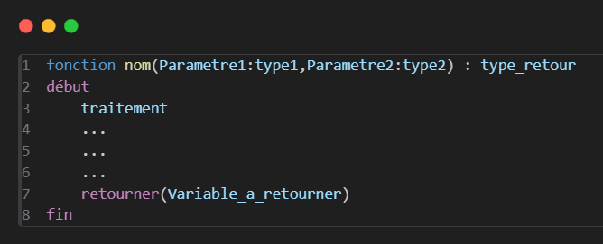
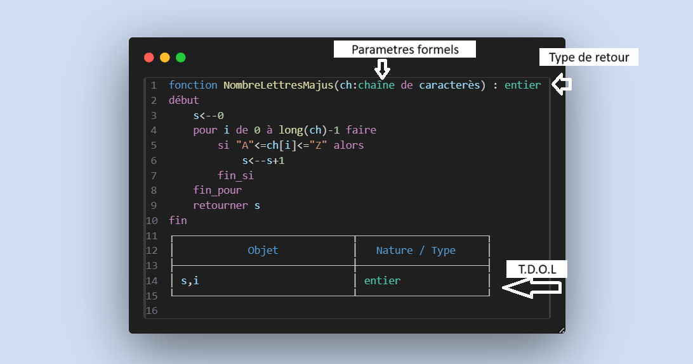
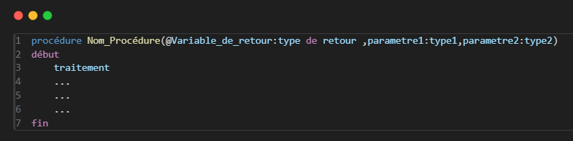
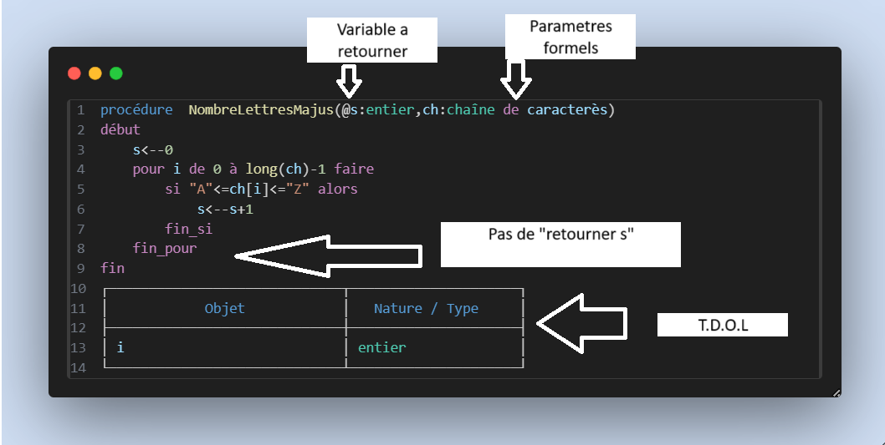

La syntaxe des fonctions

Une fonction prend des paramètres formels (ceux qui sont écrits entre parenthèses en haut) avec des types de variables précisés. Devant, on indique le type de retour de la fonction.
Par exemple, si la fonction renvoie une chaîne de caractères, on écrit « chaîne de caractères ».
Elle commence par le mot Début et se termine par Fin, qui vient toujours après l’instruction retourner.
Chaque fonction doit être accompagnée de son propre TDO (Tableau de Déclaration d’Objets). Plus de détails sont disponibles dans la page dédiée au TDO.
Exemple d'une fonction :

Appel d'une fonction
Quand on appelle une fonction, on l’écrit de la façon suivante :
x ← exemple(a, b)
Remarque :
a et b sont appelés paramètres effectifs. Ce n’est pas un détail très important, mais il faut savoir que le nom des variables n’a pas d’importance au moment de l’appel — seul l’ordre compte.
Quand le programme arrive à cette ligne, la fonction exemple s’exécute, et sa valeur de retour est stockée dans la variable x.
Les procédures

Contrairement aux fonctions, les procédures n’ont pas de ligne retourner().
À la place, si la procédure renvoie quelque chose, cela est indiqué au début dans les paramètres, avec un @ devant.
On appelle cela un passage par adresse (ce n’est pas un détail essentiel à retenir pour l’instant).
Exemple :

Cette procédure renvoie une chaîne de caractères.
Appel d'une procédure
Quand on appelle une procédure, on l’écrit de la façon suivante :
NombreLettresMajus(s,ch)
Remarque :
le noms des variables utilisés dans la déclaration (l'ecriture d'un module) n'est pas important - seul l'ordre compte.
Comme les fonctions, les procédures doivent aussi être accompagnées de leur TDO.